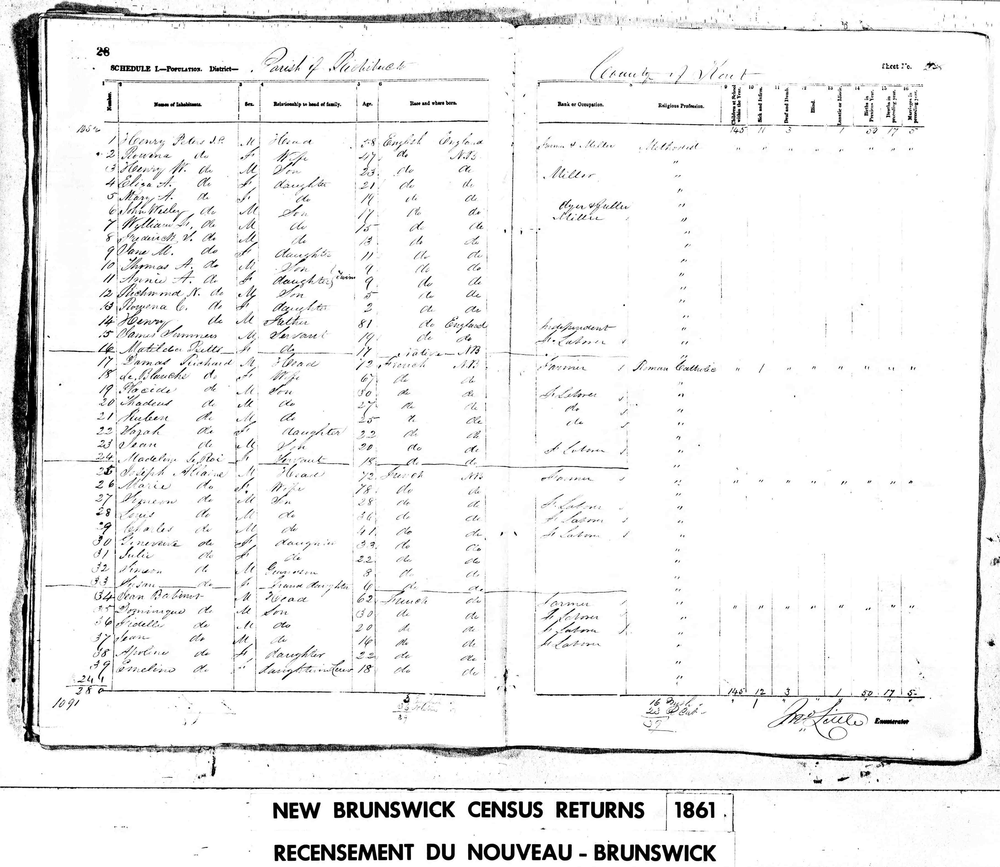
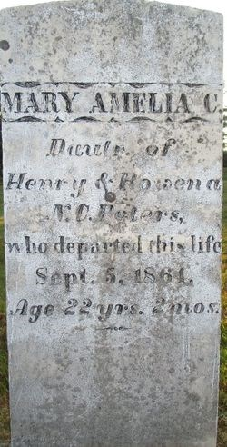
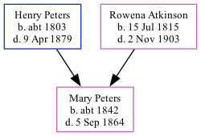

Mary Amelia C Peters c1842 - 1864
[ Home ] | [ Calendar ] | [ Surnames Index ] | [ Family History ]The child of Henry Peters and Rowena AtkinsonMary Peters, the second cousin three-times-removed on the father's side of Nigel Horne, was born in New Brunswick, Canada c. 18421,2.
Throughout her life, she lived in Richibucto, Kent, New Brunswick in 18611.
She died on Sep 5, 1864 in Richibucto, New Brunswick3 and was buried there at Richibucto Protestant Cemetery after Sep 5, 18643.
Parents
- Henry Warman was born c. 1803
- Rowena Noble Charlotte was born on Jul 15, 1815
Citations
- 1861 Census of Canada Ancestry.com Operations Inc (Relation to Head of House: Daughter)
- Canada Census 1861 - Findmypast (was the daughter of the head of the household)
- Canada, Find A Grave Index, 1600s-Current Ancestry.com Operations, Inc.
Media
1961 Census

Mary Amelia Peters - Headstone

Family Tree
Generated by ged2site. Last updated on Nov 13, 2024